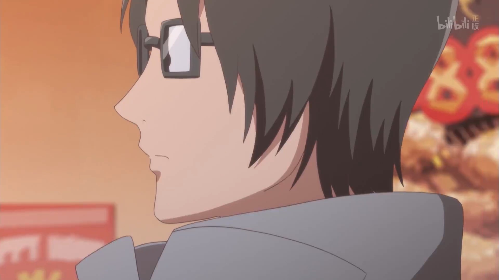

———《日常》
《女高中生的虚度日常》是一部讲述在琦之玉女子高中里，几位性格多少有点残念的女高中生的日常，这部漫画角色设定的一部分是基于作者的真实经历（作者生活挺丰富多彩的。。。）
在这部漫画中核心主角是田中望（外号笨蛋），与另外两位女生菊池茜（外号死宅），鹭宫诗织（外号机器人）是从小学就在一起的闺蜜。除了这三位主角外还有中二病属性的山本美波，萝莉属性的百井咲久，较真的一奏，混血转校生染谷莉莉等人，每个高中女生角色在故事中都有很多很真实的一面，处于一种不算是孩子但也不算是成年人的状态，会有各种吐槽和搞笑的一面。
日常多神作，也能让人看的无忧无虑开心放心，有烦恼时来上一集绝对是排忧解难的良药。
女高中生做什么都可能会被拍成动画，女高中生什么都不做也会被拍成动画.jpg
tanaka nosomu
本作女主角
如同绰号一样是个笨蛋。
梦想是成为很厉害的女生，和很厉害的人恋爱（然而怕是无
法实现了）
和谁都能自来熟，天不怕地不怕的KY
来学校第一天就给解除到的老师和学生起了绰号，然后不可
思议的流行开了。
成绩很差，自称状态好时能考到20分，好不容易记下来的
知识上个厕所就忘了。
据动画第8话中的过场（女角色们的胸围排列）来看，胸围
是倒数第一。航天飞机场（比萝莉还小）
1
PV
2
OP
3
鬼知道作词人经历了什么